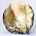

|
|
|
|
| This Week in Focus |
|
|
|
|
Salku
Studio potter, teacher and art historian Rick Berman traces the
development of his hybrid raku-salt-glaze firing technique 'Salku',
developed over many years and coming to fruition in the early
1990s. (13 December 2004)
 Crossroads Crossroads
The Seagrove International Ceramics Conference Crossroads
will be held in Seagrove, North Carolina, USA from June 5-10,
2005 and A Celebration of the Seagrove Tradition from June
11-12, 2005. (6 December 2004)
 A
Problem with Cobalt? A
Problem with Cobalt?
Studio potter and author of Safety in the Ceramics Studio
Jeff Zamek discusses the case of cobalt toxicity and its implications
for the potter. (25 November
2004)
 Théodore
Deck and the Islamic Style Théodore
Deck and the Islamic Style
This article by art historian Frederica Todd Harlow delves into
the artistic and social background to famous French potter Théodore
Deck's pioneer pottery in the 19th century. (11
November 2004))
|
|
|
|
 Web Site of the Week
Web Site of the Week
American ceramist yosoh,
aka Scott Rench, creates computer generated images that are printed
with a ceramic glaze onto a large canvas of clay. HB
|
|
|
|
| More... |
|
|
|
- Events Calendar
Listing exhibitions and other ceramic shows from around the
world. Submit your event!
- Book Reviews
From beginners books, to ceramic design to technical stuff,
you'll find a heap of great books listed and reviewed here.
- Glaze recipes
Free glaze recipes for earthenware, stoneware, porcelain,
raku and more!
- Ceramics Gallery
Got an image of your ceramic art? Why not submit it to the Ceramics
Today Gallery?
- Potters' Pets
Find out who's hanging out with whom, as far as pets go, on
this page dedicated to our animal companions.
- Add a Site
Use this page to submit your favorite ceramics site to the Ceramics
Today URL database!
Odd
Spot 
Belgian potter Russel Fouts has founded the Brussels Chapter
of Pot Fondlers Anonymous. Ask about their 12 step
program to come to terms with your pot fondling tendencies.
Find
out more
More Odd Spots |
|
|
|
   
new!
It is with sadness that we note
the passing away of prominemt studio potter Ken
Ferguson on 30 Dec. 2004. Ken was an influential educator,
counting amongst his students Chris Gustin, Keisuke Mizuno, Richard
Notkin, Akio Takamori, Kurt Weiser and many others |
|